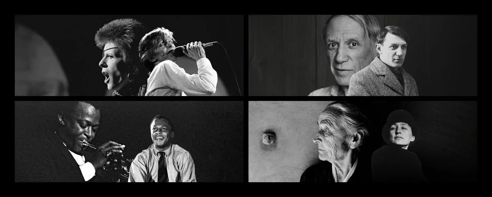
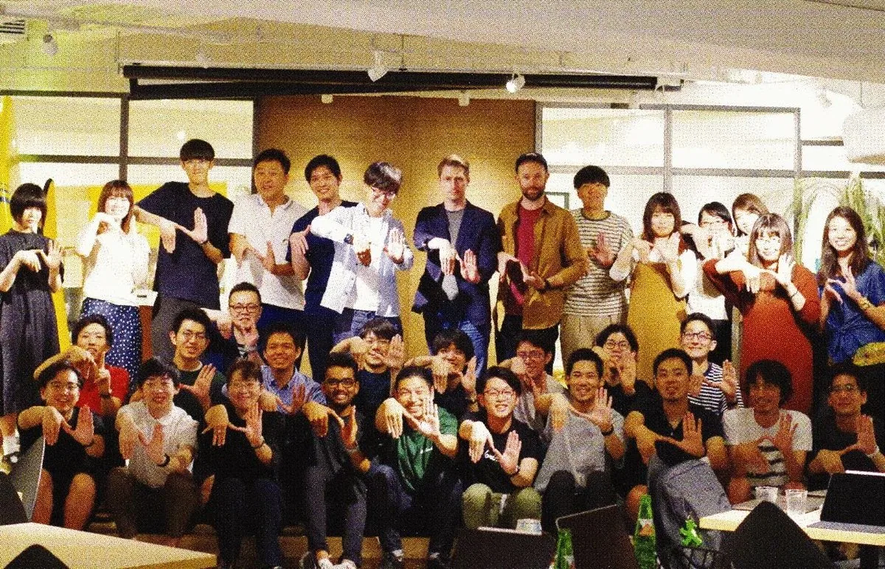
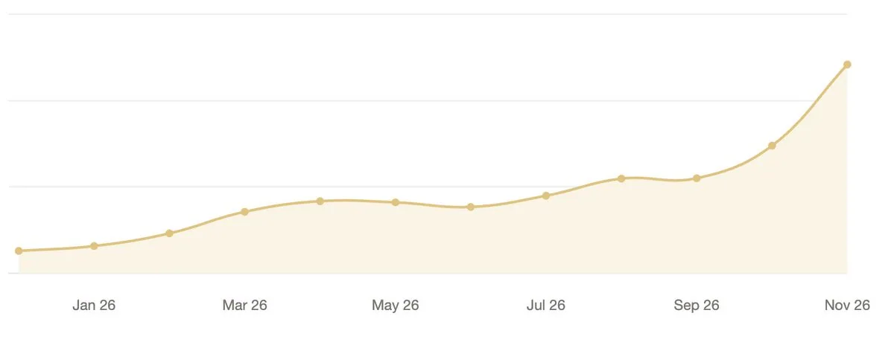
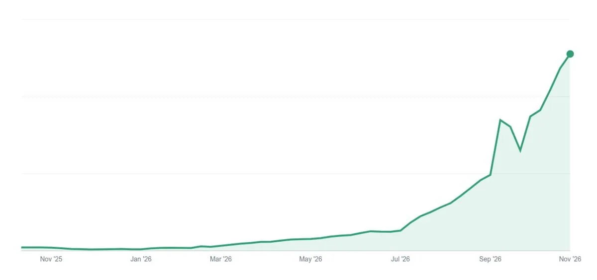
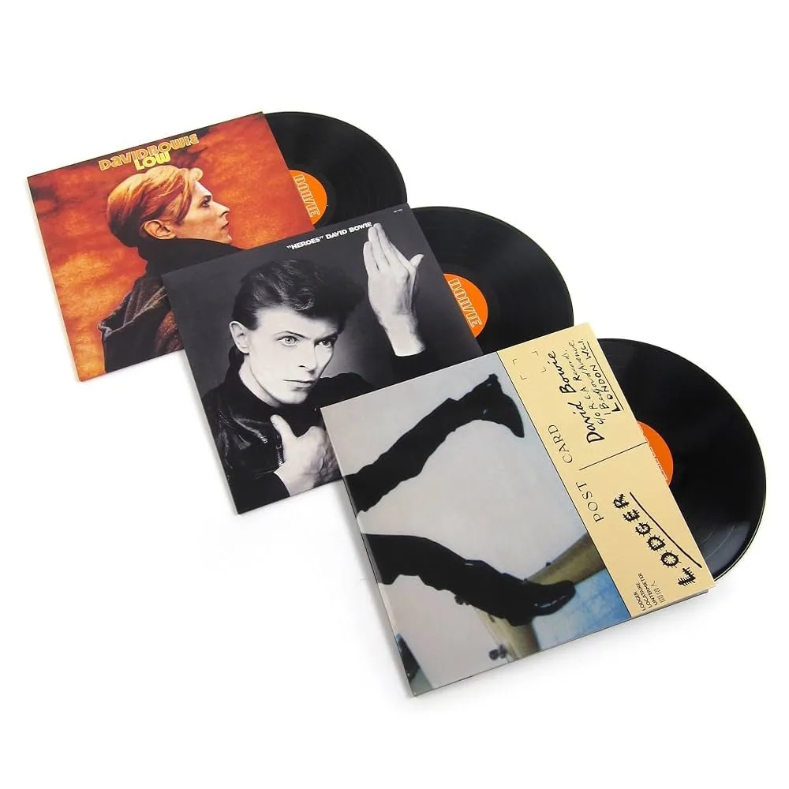

The Next Era of Notion

I love David Bowie. “Sound and Vision” was our wedding song. But what I love most is his courage to keep reinventing himself. He had four or five distinct chapters. So did Miles Davis, Pablo Picasso, and Georgia O’Keeffe. They’re my heroes.
I think of Notion’s story in chapters too.
Chapter 1: 2013-2018
A lot of people forget Notion’s early struggles. Our founding idea was romantic but vague: “fix the sorry state of personal computing and let everyone, not just programmers, shape their own tools for thought.” (Internet Archive link to our founding memo.)
Figuring out what that meant took five years. We built a visual programming app and threw it away. Then we built a productivity app and threw that away too. At one point we sublet our apartments in San Francisco and moved to Kyoto to start over. The craft and joy of building tools for others kept us going.
Eventually we launched Notion 1.0, got some early traction, and survived.
Chapter 2: 2018-2022
The breakthrough came with Notion 2.0, when we added general-purpose databases. With docs and databases together, companies had one place to work and collaborate. This time we found real product market fit, growth taking off, and a community that loved our product to spread it around the world. Today roughly 70% of our business is still outside the US.

Early Notion Community in Asia.
Chapter 3: 2022-2026
In late 2022, we dove headfirst into AI. To be honest, it started as a defensive move. We didn’t want another startup to become “Notion, but with AI,” so we decided to disrupt ourselves. First came AI Writer (a GPT wrapper!), then Enterprise Search, and then AI Meeting Notes. We wanted AI to do more, which led to Notion 3.0 and Agents. We quickly saw how much more useful AI can be when it understood a customer’s context.
Each chapter so far has lasted about four years. This year, we started to feel the market pulling us to the next one.
Chapter 4: 2026-?
When we launched Agents about a year ago, people started asking Notion agents to do the work instead of typing it themselves. Today, roughly half the pages in Notion are created by agents. AI usage inside Notion is up 9x this year.

AI usage inside Notion is up 9x this year.
9x is great, but that turned out to be the smaller signal. Each week, more agents come online, built by other companies for other jobs. All of them need the right context to do the work well, and a lot of these agents choose Notion to store and collaborate on that context. As a result, our MCP volume is up roughly 60x this year.

MCP volume for Notion is up 60x this year.
This pull clearly points to a gap in the market. Even the smartest agent isn’t much use without the right context. Big tech companies like Stripe, Uber, and Meta saw this early and built their own context systems to get the most of their tokens. Every other business will soon need one too.
This puts us in a unique spot. In the first two chapters of Notion’s story, we gave people a place to keep and collaborate on their business context. In our third chapter, we built state-of-the-art agents & harnesses to work with that context. Very few companies have gone this deep on both, and can bridge AI, data, and UI.
Our next chapter brings them together. Notion is the best context system for every agent on the planet, and our own agents keep that context up to date for people and other agents. We believe this is the biggest missing piece in diffusing AI today. It’s our mission to bring this to every business, because we believe no one should be left behind.
Changing how we work ourselves
Every new chapter requires us to change ourselves. It takes courage and new perspectives to build new products, bring in new leaders, and sometimes even rethink our business model. The playbook that got us here won’t work for what’s next. Over the past few months, we’ve made some changes at Notion:
- We brought tech under one leader, Max. The lines between design, product and engineering were already blurry, so we leaned in and created one “building” org. I’m grateful to Fuzzy for his excellent leadership of engineering over the past three years.
- Earlier this year, we split Marketing into creative and storytelling (now closer to product) and revenue marketing (now closer to sales). That’s a big reason our memes, social and billboards are more in sync with our product vision, and why our field enablement can unlock all the changes and experiments in our recent sales motions.
- Finally, we're evolving our Finance organization. In the tokenomics era, we've had to update our cadence to keep up with the dynamism of models releases. Earlier this year, we went from monthly finance reviews to multiple times a week. We recently kicked off a search for a new CFO who will help steer us through this next chapter. I'm very grateful to Rama, who diligently made Notion Finance into a world-class, well-oiled machine these past four years.
This is my 13th year at Notion.
Thirteen years into his career, David Bowie was about to move to Germany and start his “Berlin Era,” one of his creative peaks. The next year, he released the song we played at our wedding: “Sound and Vision.”

David Bowie's Berlin Trilogy: Low (1977), "Heroes" (1977), Lodger (1979). One of his creative peaks.